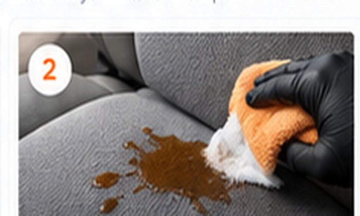

Cleaning
Clean Leather Seats Safely
Vacuum first, use a surface-safe cleaner, agitate gently and wipe dry.
See answer →Keep your interior clean, protected, comfortable and easier to maintain with the right process and products.
Start with the surface you are working on.
Clean, condition and protect coated automotive leather.
Work from the stain type and remove residue without overwetting.
Find and remove the source before adding fragrance.
Keep carpet dry, clean and easier to maintain.
Fast, repeatable routines for common jobs.
Vacuum first, use a surface-safe cleaner, agitate gently and wipe dry.
See answer →
Blot, identify the stain, work from mild to stronger, then extract residue.
See answer →
Check spills, carpet padding, HVAC, moisture and forgotten organic debris.
See answer →
A basic kit can cover most routine care: vacuum, microfiber towels, soft brushes, a surface-safe cleaner, interior protectant and targeted specialty products only when needed.